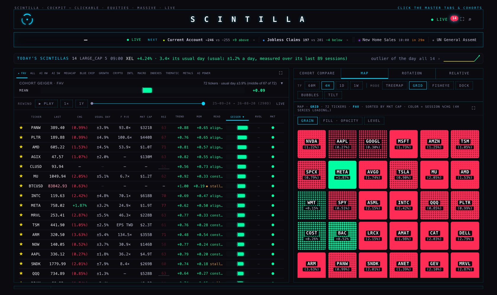
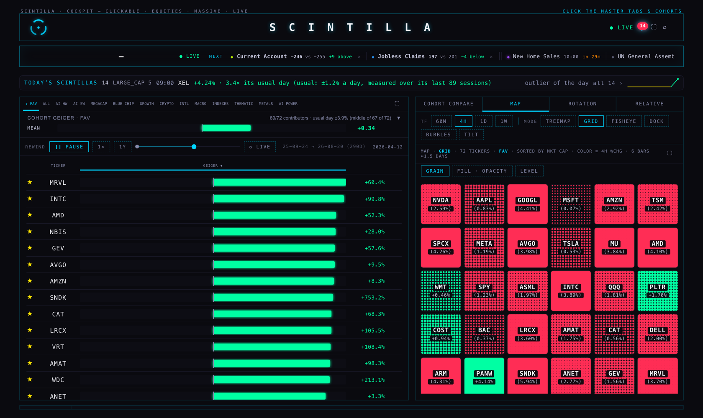
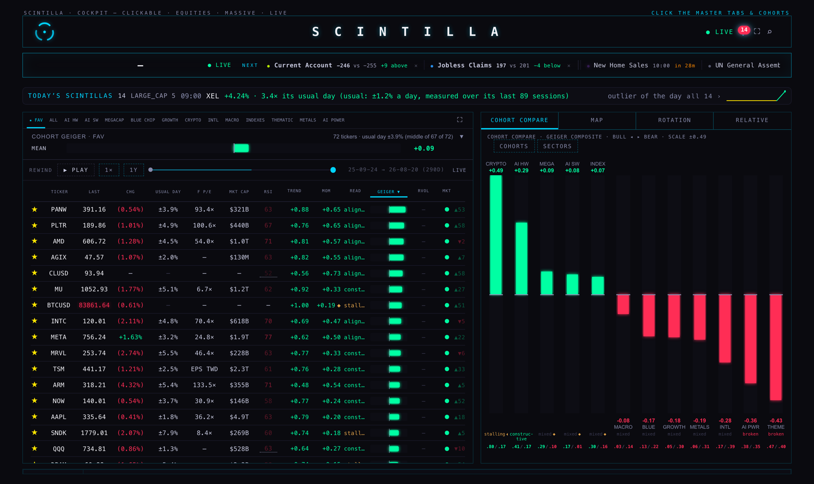
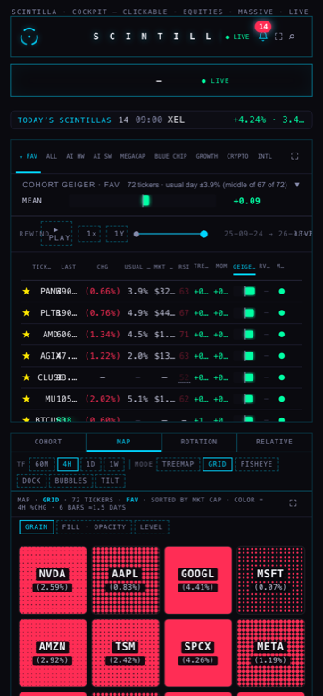
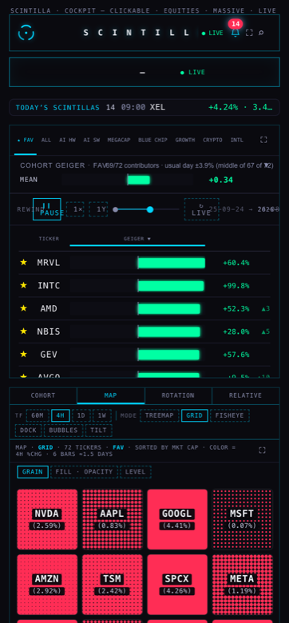
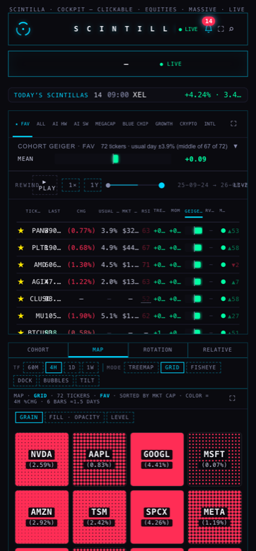

SCINTILLA · HUB REPLAY · 24 SEPTEMBER 2026
The replay now plays the way the approved proposal said it should. Press PLAY and the board takes its columns off: what is left is the ticker and one big Geiger bar per row, and the only thing moving is the bars and the order they sit in. Press LIVE and the normal board comes straight back.
What changed, in one paragraph
Before today, pressing PLAY replayed everything — the price, the day change, RSI, the usual day, every column playing its own history. That was the wrong idea, and it is gone. While the replay is running (or while the scrubber is sitting on any past day) the board hides every column except TICKER and the GEIGER bar, the bar grows into all the space the columns gave up and gets taller, and the rows re-sort by the replayed Geiger. Two readings ride along with the movement: a little arrow saying how many places a row just moved, and the % the price changed across the stretch you are replaying. A 1× / 2× / 4× chip beside PLAY sets how fast it runs.
The frames, from a real replay
These are photographs of the page running in a real browser, on a real cohort (FAV, 72 names), reading the real fan and momentum history. Nothing here is drawn by hand. The run was headless — no window opened on anyone's screen.
Wide screen · 1680



Phone · 390



The three readings on the screen
| What | Where it comes from | How it is drawn |
|---|---|---|
| The bar | The Geiger for that day: fan_daily.read and momentum_daily.read for the date on the scrubber, blended with your own family weights — the same blend the live Geiger uses. | The board's own bipolar bar. Green above the middle, red below. A row with no reading for that date shows a dash and does not rank. |
| ▲3 / ▼2 | How many places that row moved on this frame, and nothing else. | In the fixed column hard right, green up, red down. It fades in on the move and clears after 1.4 seconds. |
| +60.4% | The close on the frame you are looking at against the close on the first day of the window you set — daily bars from the chart API, the same prices the rest of the Hub uses. Hover it and it names both dates. | Beside the bar. Green up, red down, never grey. A name whose bars have not arrived yet shows a quiet "…" rather than a number it does not have. |
| 1× / 2× / 4× | Your choice. The chip sits beside PLAY and shows the speed it is running at. (½× is also on the chip — see the decisions below.) | Changing speed while it is playing keeps the playhead where it is; only the rate changes. |
How the movement was chosen
The proposal — “GEIGER — how a re-sort should move” on Station — offers five movements and ships with one already selected: SETTLE → REFLOW. The bars change value in place first, then the rows slide to their new order. That is the one this uses, because it gives two readings out of one update: what changed, and then what that did to the standings. The proposal's other two default switches are honoured as it ships them: ghost of last order is off (a ghost tick on every track, on hundreds of rows, four days a second, is noise where the proposal shows thirteen rows by hand), and near-ties hold — the board's own sort is stable, so rows with equal values keep the order they already had and the table does not flicker.
The two durations come from the speed chip in the proposal's own proportions — it uses 230ms of settle and 400ms of reflow, which is 33% and 57% of a 700ms day. So at 1× the settle is 231ms and the reflow 399ms; at 4× both shrink with the day. The movement always finishes inside the day it belongs to, at every speed.
What it costs
A replay tick is measured by the page itself, not estimated. Over the run above, at 72 rows:
| Measure | 1680 | 390 |
|---|---|---|
| time per tick | 6.2 – 7.6 ms | 4.9 – 5.3 ms |
| of which, writing the bars | 0.3 – 0.6 ms | 0.3 – 0.5 ms |
| of which, the re-sort | 5.9 – 7.0 ms | 4.6 – 4.8 ms |
| times it measured the page | 2 (+1 flush) | 2 (+1 flush) |
| rows moved / animated | 60–62 / 15–16 | 62–66 / 17–21 |
The two measurements a tick is the rule the last round set and it still holds: the board's box and its scroll position are read once each, and every row's position is arithmetic from there. The one extra read is the single flush that makes the slide start from where the row actually was. Rows off screen are re-ordered but not animated. The % change column reads nothing at all. The one exception: turning motion mode on makes the rows taller, so the row pitch is measured again on that first frame — about 14 reads, once, and then back to two.
The cohort compare strip still rewinds
Checked in the same browser run: with the strip open, the cohorts re-order as the scrubber moves (live: CRYPTO, AI HW, MEGA… · 2026-06-20: AI HW, INDEX, AI PWR…) and the strip's own scale changes with the date. Pressing LIVE puts it back to exactly the live order.
What was taken out
- Every column playing its own history — the painter that rewrote LAST, CHG, RSI, USUAL DAY, F P/E, MKT CAP, RVOL and the market dot on every replayed day, along with its table of “no history, and here is why” reasons and its dash and waiting writers.
- The extra RSI column that the replay was asking the database for on every day, purely to paint the RSI cell. It is not painted any more, so it is not asked for.
- The freeze on the live price. While a replay ran, the live tick was blocked from writing the price and day-change cells so that today's number could not sit on a past row. Motion mode hides those cells instead, so the live values may keep flowing underneath — which is what makes pressing LIVE land on a board that was never stale. (The shared “is the board rewound?” reader stays; it simply gates nothing now.)
Kept, because the new mode needs them: the daily-bar cache (fetched once per name per window, four at a time, on-screen rows first) and its weekend carry — on a Saturday frame the % change measures to the last close instead of blanking, which is why the board no longer blinks once a week. A gap longer than four days is a real hole and stays empty.
What could be wrong
- Every bar can look the same length. The bar is scaled to the largest Geiger on the board for that frame — the same way the live board does it. On a day when the whole cohort is bullish, that is a wall of near-full green bars, and the length stops meaning much from one day to the next. A fixed ±1 scale would make lengths comparable across days. It is a real choice and it is in the decisions below.
- The % change can be a very big number — SNDK reads +753.2% above. That is honest for a window that starts in September 2025, but it is worth remembering that the number is as long as the window you set with the two handles, not a day move. The tooltip names both dates.
- Names whose daily bars have not landed show “…”. Only the rows on screen are fetched, so scrolling fast during a replay will show a few of these before they fill in.
- The rewind bar is crowded on a phone. The PLAY / speed / window chips, the scrubber and the date share one line at 390 and the text runs into itself. Measured against the untouched release build: the layout is identical, so this is not something today's work caused — but it is real and worth its own small pass.
- This was proved on a 72-name cohort. The ALL surface carries several hundred; the per-tick cost is dominated by the re-sort, which grows with the row count. The measurements above are the FAV board, not the biggest one.
- The replayed Geiger is only as good as the history behind it — a name with no fan row for a date drops out of the ranking for that frame rather than keeping a borrowed value.
What I did not do
- Nothing was deployed and nothing was pushed. This is a branch for you to look at.
- No database write, no schedule, no provider job, no change to weights, rungs or any Geiger definition.
- The economic room, the notifications, Indicator Lab and the other rooms are untouched.
- I did not change the bar's scale, and I did not remove the ½× speed.
- Only one cohort (FAV) was photographed, and only one movement style is wired in — the proposal's other four are not offered as settings on the Hub.
HUB BRANCH hub/replay-motion-20260924 · FROM origin/hub/release-20260923 @ 19d1870 · TESTS 776 RUN, 771 PASS, 3 FAIL — THE SAME THREE THAT ALREADY FAIL ON THE RELEASE · BROWSER RUN HEADLESS, CROSS-ORIGIN CHECK RELAXED LOCALLY SO THE CHART API WOULD ANSWER A LOCALHOST PAGE